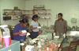
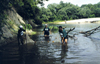
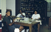
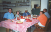
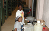

Internships
During the summer months of 1996-2004, students from the New Orleans Center for Science and Mathematics worked as Curatorial Assistants in the Royal D. Suttkus Fish Collection. The students were supported through the Research Assistantships for Minority High School Students (RAMHSS) program at the National Science Foundation. They worked for eight weeks, assisting Museum staff with tasks of an ongoing collection-improvement project andaccompanying museum staff on field surveys. Over the course of their summer internships, the RAMHSS participants learned techniques of curating and managing an important fish collection. Participants in the nine previous RAMHSS cohorts are listed below. Also shown are photos of the participants working at the museum and assisting in field work. Eighty-nine percent (89%) of former TUMNH RAMHSS participants who have finished high school are enrolled in undergraduate and graduate programs in colleges and universities. Sixty-eight percent (68%) of these are pursuing degrees in Science, Mathematics and Engineering fields.
    {kind=link}
{kind=link}
{kind=link}
{kind=link}
{kind=link}
{kind=link}
{kind=link}
{kind=link}
{kind=link}
RAMHSS CURATORIAL ASSISTANTS 1996-2004
- Stanley Cholette
- Amanda Davis
- Rashad Jackson
- Christian Dodgens
- Doan Ky
- Elizabeth Silva
- Jeric Jones
- Ashley Smith
- RDanette Theiry
- Erica Buckner
- Christopher Eli
- Ishaneka Williams
- Charles Burton
- Matthew Davis
- Ashley Howard
- Caitlan Shroyer
- Erica Buckner
- Anthony Haynes
- Frederick Jones
- Jarrett Lemieux
- Danadrewnetta Wooden
- Adlai Stevenson II
- Michael Buckner, Jr.
- Paige Singleton
- Jarrett Lemieux
- Michael Buckner, Jr.
- Paige Singleton
- Dedrick Welch